Chapter 37: The Endocrine System¶
Introduction¶
An animal’s endocrine system controls body processes through the production, secretion, and regulation of hormones, which serve as chemical “messengers” functioning in cellular and organ activity and, ultimately, maintaining the body’s homeostasis. The endocrine system plays a role in growth, metabolism, and sexual development. In humans, common endocrine system diseases include thyroid disease and diabetes mellitus. In organisms that undergo metamorphosis, the process is controlled by the endocrine system. The transformation from tadpole to frog, for example, is complex and nuanced to adapt to specific environments and ecological circumstances.
37.1 Types of Hormones¶
Learning Objectives
By the end of this section, you will be able to do the following:
- List the different types of hormones
- Explain their role in maintaining homeostasis
Maintaining homeostasis within the body requires the coordination of many different systems and organs. Communication between neighboring cells, and between cells and tissues in distant parts of the body, occurs through the release of chemicals called hormones. Hormones are released into body fluids (usually blood) that carry these chemicals to their target cells. At the target cells, which are cells that have a receptor for a signal or ligand from a signal cell, the hormones elicit a response. The cells, tissues, and organs that secrete hormones make up the endocrine system. Examples of glands of the endocrine system include the adrenal glands, which produce hormones such as epinephrine and norepinephrine that regulate responses to stress, and the thyroid gland, which produces thyroid hormones that regulate metabolic rates.
Although there are many different hormones in the human body, they can be divided into three classes based on their chemical structure: lipid-derived, amino acid-derived, and peptide (peptide and proteins) hormones. One of the key distinguishing features of lipid-derived hormones is that they can diffuse across plasma membranes whereas the amino acid-derived and peptide hormones cannot.
Lipid-Derived Hormones (or Lipid-soluble Hormones)¶
Most lipid hormones are derived from cholesterol and thus are structurally similar to it, as illustrated in Figure 37.2. The primary class of lipid hormones in humans is the steroid hormones. Chemically, these hormones are usually ketones or alcohols; their chemical names will end in “-ol” for alcohols or “-one” for ketones. Examples of steroid hormones include estrogens (such as estradiol) and androgens (such as testosterone), both of which regulate bone and tissue development in all humans.
Gonadal hormones, produced by the gonads, include both steroid and peptide hormones. Androgens and estrogens resemble one another in chemical structure and originate from the same molecule. Estrogens are chief drivers of sexual development in an ovarian reproductive system, while androgens drive development in a testicular reproductive system. The ovaries produce steroid hormones such as estradiol and progesterone. When androgens are produced, some of them are later converted to estrogens. Minute amounts of estrogen occur through aromatase actions in adipose, brain, skin, and bone, which convert testosterone to estrogen. The testes and the adrenal cortex both secrete testosterone.
Other steroid hormones include aldosterone and cortisol, which are released by the adrenal glands along with some other types of androgens. Steroid hormones are insoluble in water, and they are transported by transport proteins in blood. As a result, they remain in circulation longer than peptide hormones. For example, cortisol has a half-life of 60 to 90 minutes, while epinephrine, an amino acid derived-hormone, has a half-life of approximately one minute.
![Part A shows the molecular structure of cholesterol, which has three six-carbon rings attached to a five-carbon ring. A hydroxyl group is attached to the first six-membered ring, and a branched carbon chain is attached to the five-membered ring. Two methyl groups are attached each to a carbon that links the rings together. Part B shows the molecular structure of testosterone, which has a hydroxyl group in place of the branched carbon chain found on cholesterol. A ketone instead of a hydroxyl group is attached to the six-membered ring. Part C shows the molecular structure of estradiol, which, like testosterone, has a hydroxyl group in place of cholesterol’s branched carbon chain. Estradiol also lacks one of the methyl groups found in cholesterol.](img/figure-37-01-01abc.webp)
Amino Acid-Derived Hormones¶
The amino acid-derived hormones are relatively small molecules that are derived from the amino acids tyrosine and tryptophan, shown in Figure 37.3. If a hormone is amino acid-derived, its chemical name will end in “-ine”. Examples of amino acid-derived hormones include epinephrine and norepinephrine, which are synthesized in the medulla of the adrenal glands, and thyroxine, which is produced by the thyroid gland. The pineal gland in the brain makes and secretes melatonin which regulates sleep cycles.
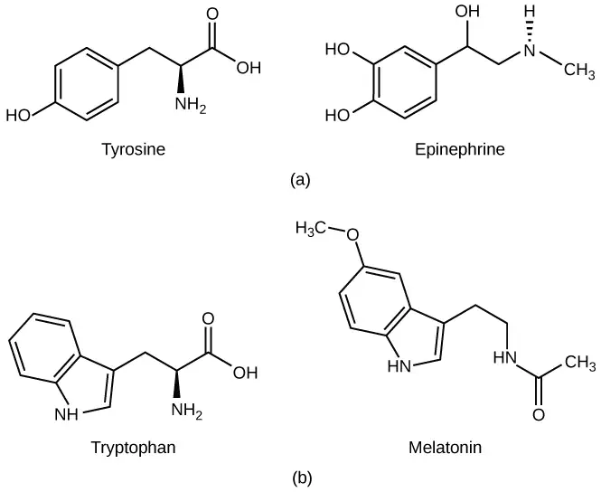
Peptide Hormones¶
The structure of peptide hormones is that of a polypeptide chain (chain of amino acids). The peptide hormones include molecules that are short polypeptide chains, such as antidiuretic hormone and oxytocin produced in the brain and released into the blood in the posterior pituitary gland. This class also includes small proteins, like growth hormones produced by the pituitary, and large glycoproteins such as follicle-stimulating hormone produced by the pituitary. Figure 37.4 illustrates these peptide hormones.
Secreted peptides like insulin are stored within vesicles in the cells that synthesize them. They are then released in response to stimuli such as high blood glucose levels in the case of insulin. Amino acid-derived and polypeptide hormones are water-soluble and insoluble in lipids. These hormones cannot pass through plasma membranes of cells; therefore, their receptors are found on the surface of the target cells.
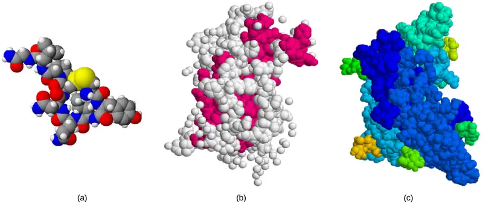
Career Connection: Endocrinologist
An endocrinologist is a medical doctor who specializes in treating disorders of the endocrine glands, hormone systems, and glucose and lipid metabolic pathways. An endocrine surgeon specializes in the surgical treatment of endocrine diseases and glands. Some of the diseases that are managed by endocrinologists: disorders of the pancreas (diabetes mellitus), disorders of the pituitary (gigantism, acromegaly, and pituitary dwarfism), disorders of the thyroid gland (goiter and Graves’ disease), and disorders of the adrenal glands (Cushing’s disease and Addison’s disease).
Endocrinologists are required to assess patients and diagnose endocrine disorders through extensive use of laboratory tests. Many endocrine diseases are diagnosed using tests that stimulate or suppress endocrine organ functioning. Blood samples are then drawn to determine the effect of stimulating or suppressing an endocrine organ on the production of hormones. For example, to diagnose diabetes mellitus, patients are required to fast for 12 to 24 hours. They are then given a sugary drink, which stimulates the pancreas to produce insulin to decrease blood glucose levels. A blood sample is taken one to two hours after the sugar drink is consumed. If the pancreas is functioning properly, the blood glucose level will be within a normal range. Another example is the A1C test, which can be performed during blood screening. The A1C test measures average blood glucose levels over the past two to three months by examining how well the blood glucose is being managed over a long time.
Once a disease has been diagnosed, endocrinologists can prescribe lifestyle changes and/or medications to treat the disease. Some cases of diabetes mellitus can be managed by exercise, weight loss, and a healthy diet; in other cases, medications may be required to enhance insulin release. If the disease cannot be controlled by these means, the endocrinologist may prescribe insulin injections.
In addition to clinical practice, endocrinologists may also be involved in primary research and development activities. For example, ongoing islet transplant research is investigating how healthy pancreas islet cells may be transplanted into diabetic patients. Successful islet transplants may allow patients to stop taking insulin injections.
37.2 How Hormones Work¶
Learning Objectives
By the end of this section, you will be able to do the following:
- Explain how hormones work
- Discuss the role of different types of hormone receptors
Hormones mediate changes in target cells by binding to specific hormone receptors. In this way, even though hormones circulate throughout the body and come into contact with many different cell types, they only affect cells that possess the necessary receptors. Receptors for a specific hormone may be found on many different cells or may be limited to a small number of specialized cells. For example, thyroid hormones act on many different tissue types, stimulating metabolic activity throughout the body. Cells can have many receptors for the same hormone but often also possess receptors for different types of hormones. The number of receptors that respond to a hormone determines the cell’s sensitivity to that hormone, and the resulting cellular response. Additionally, the number of receptors that respond to a hormone can change over time, resulting in increased or decreased cell sensitivity. In up-regulation, the number of receptors increases in response to prolonged low hormone levels, making the cell more sensitive to the hormone and allowing for more cellular activity. When the number of receptors decreases in response to rising hormone levels, called down-regulation, cellular activity is reduced.
Receptor binding alters cellular activity and results in an increase or decrease in normal body processes. Depending on the location of the protein receptor on the target cell and the chemical structure of the hormone, hormones can mediate changes directly by binding to intracellular hormone receptors and modulating gene transcription, or indirectly by binding to cell surface receptors and stimulating signaling pathways.
Intracellular Hormone Receptors¶
Lipid-derived (soluble) hormones such as steroid hormones diffuse across the membranes of the endocrine cell. Once outside the cell, they bind to transport proteins that keep them soluble in the bloodstream. At the target cell, the hormones are released from the carrier protein and diffuse across the lipid bilayer of the plasma membrane of cells. The steroid hormones pass through the plasma membrane of a target cell and adhere to intracellular receptors residing in the cytoplasm or in the nucleus. The cell signaling pathways induced by the steroid hormones regulate specific genes on the cell's DNA. The hormones and receptor complex act as transcription regulators by increasing or decreasing the synthesis of mRNA molecules of specific genes. This, in turn, determines the amount of corresponding protein that is synthesized by altering gene expression. This protein can be used either to change the structure of the cell or to produce enzymes that catalyze chemical reactions. In this way, the steroid hormone regulates specific cell processes as illustrated in Figure 37.5.
Visual Connection
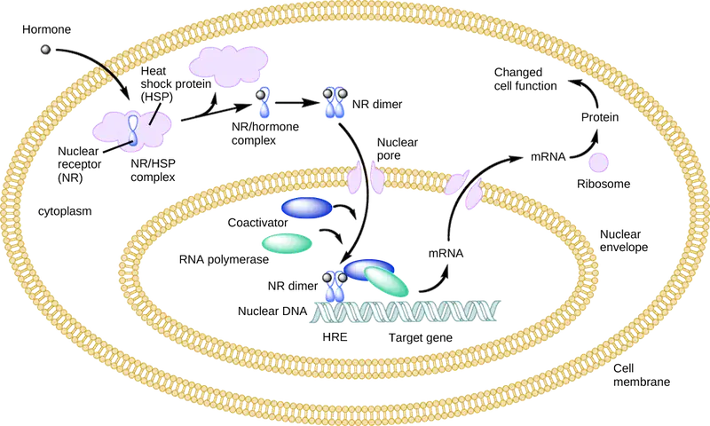
Heat shock proteins (HSP) are so named because they help refold misfolded proteins. In response to increased temperature (a “heat shock”), heat shock proteins are activated by release from the NR/HSP complex. At the same time, transcription of HSP genes is activated. Why do you think the cell responds to a heat shock by increasing the activity of proteins that help refold misfolded proteins?
Other lipid-soluble hormones that are not steroid hormones, such as vitamin D and thyroxine, have receptors located in the nucleus. While thyroxine is mostly hydrophobic, its passage across the membrane is dependent on transporter protein. Vitamin D diffuses across both the plasma membrane and the nuclear envelope. Once in the cell, both hormones bind to receptors in the nucleus. The hormone-receptor complex stimulates transcription of specific genes.
Plasma Membrane Hormone Receptors¶
Amino acid-derived hormones (with the exception of thyroxine) and polypeptide hormones are not lipid-derived (lipid-soluble) and therefore cannot diffuse through the plasma membrane of cells. Lipid insoluble hormones bind to receptors on the outer surface of the plasma membrane, via plasma membrane hormone receptors. Unlike steroid hormones, lipid insoluble hormones do not directly affect the target cell because they cannot enter the cell and act directly on DNA. Binding of these hormones to a cell surface receptor results in activation of a signaling pathway; this triggers intracellular activity and carries out the specific effects associated with the hormone. In this way, nothing passes through the cell membrane; the hormone that binds at the surface remains at the surface of the cell while the intracellular product remains inside the cell. The hormone that initiates the signaling pathway is called a first messenger, which activates a second messenger in the cytoplasm, as illustrated in Figure 37.6.
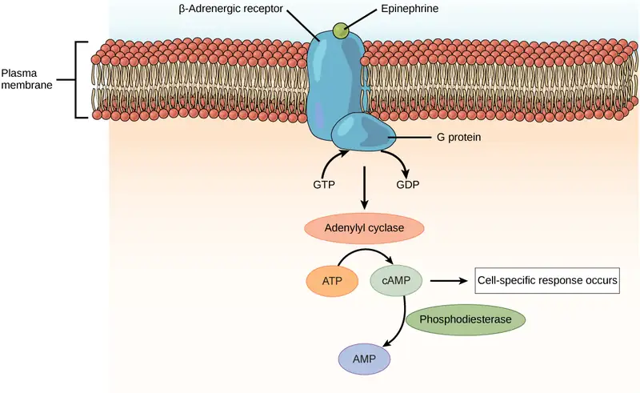
One very important second messenger is cyclic AMP (cAMP). When a hormone binds to its membrane receptor, a G-protein that is associated with the receptor is activated; G-proteins are proteins separate from receptors that are found in the cell membrane. When a hormone is not bound to the receptor, the G-protein is inactive and is bound to guanosine diphosphate, or GDP. When a hormone binds to the receptor, the G-protein is activated by binding guanosine triphosphate, or GTP, in place of GDP. After binding, GTP is hydrolysed by the G-protein into GDP and becomes inactive.
The activated G-protein in turn activates a membrane-bound enzyme called adenylyl cyclase. Adenylyl cyclase catalyzes the conversion of ATP to cAMP. cAMP, in turn, activates a group of proteins called protein kinases, which transfer a phosphate group from ATP to a substrate molecule in a process called phosphorylation. The phosphorylation of a substrate molecule changes its structural orientation, thereby activating it. These activated molecules can then mediate changes in cellular processes.
The effect of a hormone is amplified as the signaling pathway progresses. The binding of a hormone at a single receptor causes the activation of many G-proteins, which activates adenylyl cyclase. Each molecule of adenylyl cyclase then triggers the formation of many molecules of cAMP. Further amplification occurs as protein kinases, once activated by cAMP, can catalyze many reactions. In this way, a small amount of hormone can trigger the formation of a large amount of cellular product. To stop hormone activity, cAMP is deactivated by the cytoplasmic enzyme phosphodiesterase, or PDE. PDE is always present in the cell and breaks down cAMP to control hormone activity, preventing overproduction of cellular products.
The specific response of a cell to a lipid insoluble hormone depends on the type of receptors that are present on the cell membrane and the substrate molecules present in the cell cytoplasm. Cellular responses to hormone binding of a receptor include altering membrane permeability and metabolic pathways, stimulating synthesis of proteins and enzymes, and activating hormone release.
37.3 Regulation of Body Processes¶
Learning Objectives
By the end of this section, you will be able to do the following:
- Explain how hormones regulate the excretory system
- Discuss the role of hormones in the reproductive system
- Describe how hormones regulate metabolism
- Explain the role of hormones in different diseases
Hormones have a wide range of effects and modulate many different body processes. The key regulatory processes that will be examined here are those affecting the excretory system, the reproductive system, metabolism, blood calcium concentrations, growth, and the stress response.
Hormonal Regulation of the Excretory System¶
Maintaining a proper water balance in the body is important to avoid dehydration or over-hydration (hyponatremia). The water concentration of the body is monitored by osmoreceptors in the hypothalamus, which detect the concentration of electrolytes in the extracellular fluid. The concentration of electrolytes in the blood rises when there is water loss caused by excessive perspiration, inadequate water intake, or low blood volume due to blood loss. An increase in blood electrolyte levels results in a neuronal signal being sent from the osmoreceptors in hypothalamic nuclei. The pituitary gland has two components: anterior and posterior. The anterior pituitary is composed of glandular cells that secrete protein hormones. The posterior pituitary is an extension of the hypothalamus. It is composed largely of neurons that are continuous with the hypothalamus.
The hypothalamus produces a polypeptide hormone known as antidiuretic hormone (ADH), which is transported to and released from the posterior pituitary gland. The principal action of ADH is to regulate the amount of water excreted by the kidneys. As ADH (which is also known as vasopressin) causes direct water reabsorption from the kidney tubules, salts and wastes are concentrated in what will eventually be excreted as urine. The hypothalamus controls the mechanisms of ADH secretion, either by regulating blood volume or the concentration of water in the blood. Dehydration or physiological stress can cause an increase of osmolarity above 300 mOsm/L, which in turn, raises ADH secretion and causes water to be retained, causing an increase in blood pressure. ADH travels in the bloodstream to the kidneys. Once at the kidneys, ADH changes the kidneys to become more permeable to water by temporarily inserting water channels, aquaporins, into the kidney tubules. Water moves out of the kidney tubules through the aquaporins, reducing urine volume. The water is reabsorbed into the capillaries lowering blood osmolarity back toward normal. As blood osmolarity decreases, a negative feedback mechanism reduces osmoreceptor activity in the hypothalamus, and ADH secretion is reduced. ADH release can be reduced by certain substances, including alcohol, which can cause increased urine production and dehydration.
Chronic underproduction of ADH or a mutation in the ADH receptor results in diabetes insipidus. If the posterior pituitary does not release enough ADH, water cannot be retained by the kidneys and is lost as urine. This causes increased thirst, but water taken in is lost again and must be continually consumed. If the condition is not severe, dehydration may not occur, but severe cases can lead to electrolyte imbalances due to dehydration.
Another hormone responsible for maintaining electrolyte concentrations in extracellular fluids is aldosterone, a steroid hormone that is produced by the adrenal cortex. In contrast to ADH, which promotes the reabsorption of water to maintain proper water balance, aldosterone maintains proper water balance by enhancing Na+ reabsorption and K+ secretion from extracellular fluid of the cells in kidney tubules. Because it is produced in the cortex of the adrenal gland and affects the concentrations of minerals Na+and K+, aldosterone is referred to as a mineralocorticoid, a corticosteroid that affects ion and water balance. Aldosterone release is stimulated by a decrease in blood sodium levels, blood volume, or blood pressure, or an increase in blood potassium levels. It also prevents the loss of Na+ from sweat, saliva, and gastric juice. The reabsorption of Na+ also results in the osmotic reabsorption of water, which alters blood volume and blood pressure.
Aldosterone production can be stimulated by low blood pressure, which triggers a sequence of chemical release, as illustrated in Figure 37.7. When blood pressure drops, the renin-angiotensin-aldosterone system (RAAS) is activated. Cells in the juxtaglomerular apparatus, which regulates the functions of the nephrons of the kidney, detect this and release renin. Renin, an enzyme, circulates in the blood and reacts with a plasma protein produced by the liver called angiotensinogen. When angiotensinogen is cleaved by renin, it produces angiotensin I, which is then converted into angiotensin II in the lungs. Angiotensin II functions as a hormone and then causes the release of the hormone aldosterone by the adrenal cortex, resulting in increased Na+ reabsorption, water retention, and an increase in blood pressure. Angiotensin II in addition to being a potent vasoconstrictor also causes an increase in ADH and increased thirst, both of which help to raise blood pressure.
![The Renin-angiotensin-aldosterone pathway involves four hormones: renin, which is made in the kidney, angiotensinogen, which is made in the liver, aldosterone, which is made in the adrenal glands, and A D H, which is made in the hypothalamus and secreted by the posterior pituitary. The adrenal glands are located on top of the kidneys, and the hypothalamus and pituitary are in the brain. The pathway begins when renin converts angiotensinogen into angiotensin I. Angiotensin I is the converted into angiotensin I I. Angiotensin I I has several direct effects. These include arterial constriction, which increases blood pressure, decreasing the glomerular filtration rate, which results in water retention, and increasing thirst. Angiotensin I I also triggers the release of two other hormones, aldosterone and A D H. Aldosterone causes nephron distal tubules to reabsorb more sodium and water, which increases blood volume. A D H mediates the insertion of aquaporins into the nephridial collecting ducts. As a result, more water is reabsorbed by the blood. A D H also causes arteries to constrict.](img/figure-37-03-01b.webp)
Hormonal Regulation of the Reproductive System¶
Regulation of the reproductive system is a process that requires the action of hormones from the pituitary gland, the adrenal cortex, and the gonads. During puberty in both males and females, the hypothalamus produces gonadotropin-releasing hormone (GnRH), which stimulates the production and release of follicle-stimulating hormone (FSH) and luteinizing hormone (LH) from the anterior pituitary gland. These hormones regulate the gonads (testes in males and ovaries in females) and therefore are called gonadotropins. In both males and females, FSH stimulates gamete production and LH stimulates production of hormones by the gonads. An increase in gonad hormone levels inhibits GnRH production through a negative feedback loop.
Regulation of the Testicular Reproductive System¶
In the testes, FSH stimulates the maturation of sperm cells. FSH production is inhibited by the hormone inhibin, which is released by the testes. LH stimulates production of the sex hormones (androgens) by the interstitial cells of the testes and therefore is also called interstitial cell-stimulating hormone.
The most widely known androgen in males is testosterone. Testosterone promotes the production of sperm and a suite of secondary sex characteristics, such as the growth and development of the testes and penis, increased skeletal and muscular growth, enlargement of the larynx, increased growth and redistribution of body hair, and increased sexual drive. The adrenal cortex also produces small amounts of testosterone precursor, although the role of this additional hormone production is not fully understood. Testosterone secretion is regulated by both the hypothalamus and the anterior pituitary gland. The hypothalamus sends releasing hormones that stimulate the release of gonadotropins from the anterior pituitary gland.
Everyday Connection: The Dangers of Synthetic Hormones
Some athletes attempt to boost their performance by using artificial hormones that enhance muscle performance. Anabolic steroids, a form of testosterone, are one of the most widely known performance-enhancing drugs. Steroids are used in sports to help build muscle mass. Other hormones that are used to enhance athletic performance include erythropoietin, which triggers the production of red blood cells, and human growth hormone, which can help in building muscle mass. Most performance enhancing drugs are illegal for nonmedical purposes. They are also banned by national and international governing bodies including the International Olympic Committee, the U.S. Olympic Committee, the National Collegiate Athletic Association, the Major League Baseball, and the National Football League.
The side effects of synthetic hormones are often significant and nonreversible, and in some cases, fatal. Androgens can produce several complications such as liver dysfunctions and liver tumors, prostate gland enlargement, difficulty urinating, premature closure of epiphyseal cartilages, testicular atrophy, infertility, and immune system depression. The physiological strain caused by these substances is often greater than what the body can handle, leading to unpredictable and dangerous effects and linking their use to heart attacks, strokes, and impaired cardiac function.
Regulation of the Ovarian Reproductive System¶
In the ovaries, FSH stimulates development of egg cells, called ova, which develop in structures called follicles. Follicle cells produce the hormone inhibin, which inhibits FSH production. LH also plays a role in the development of ova, induction of ovulation, and stimulation of estradiol and progesterone production by the ovaries (as well as testosterone production by the testes), as illustrated in Figure 37.9.Estradiol and progesterone are steroid hormones that serve several functions in the human body. Estradiol causes the egg to mature and release during the menstrual cycle, and thickens the uterine lining prior to egg implantation. Estradiol also helps with bone health, nitric oxide production, and brain function. (Low levels of estradiol have been connected to osteoporosis, mood swings, weight gain, and interrupted menstrual cycle. High levels of estradiol correlate with an increased risk of uterine and breast cancer, and cardiovascular disease.) During puberty, estradiol produces a suite of characteristics such as the increased development of breast tissue, redistribution of fat towards hips, legs, and breast, and the maturation of the uterus and vagina. Both estradiol and progesterone regulate the menstrual cycle.
![The hypothalamus secretes upper case G lower case n upper case R upper case H, which stimulates secretion of F S H and L H from the pituitary. The hypothalamus and pituitary are both found in the brain. F S H and L H stimulate follicle growth in the ovaries, and a surge in L H triggers ovulation. The two ovaries, which are located on either side of the uterus, secrete estradiol, progesterone, and inhibin. Estrodiol and progesterone regulate female sex characteristics and the menstrual cycle. Inhibin inhibits F S H production by the pituitary in a negative feedback loop.](img/figure-b37-03-02.webp)
In addition to producing FSH and LH, the anterior portion of the pituitary gland also produces the hormone prolactin (PRL). Prolactin stimulates the production of milk by the mammary glands following childbirth. Prolactin release inhibits the release of GnRH from the hypothalamus, resulting in a loss of FSH and LH release from the anterior pituitary. Prolactin levels are regulated by the hypothalamic hormones prolactin-releasing hormone (PRH) and prolactin-inhibiting hormone (PIH), which is now known to be dopamine. PRH stimulates the release of prolactin and PIH inhibits it.
The posterior pituitary releases the hormone oxytocin, which stimulates uterine contractions during childbirth. The uterine smooth muscles are not very sensitive to oxytocin until late in pregnancy when the number of oxytocin receptors in the uterus peaks. Stretching of tissues in the uterus and cervix stimulates oxytocin release during childbirth. Contractions increase in intensity as blood levels of oxytocin rise via a positive feedback mechanism until the birth is complete. Oxytocin also stimulates the contraction of myoepithelial cells around the milk-producing mammary glands. As these cells contract, milk is forced from the secretory alveoli into milk ducts and is ejected from the breasts in milk ejection (“let-down”) reflex. Oxytocin release is stimulated by the suckling of an infant, which triggers the synthesis of oxytocin in the hypothalamus and its release into circulation at the posterior pituitary.
Hormonal Regulation of Metabolism¶
Blood glucose levels vary widely over the course of a day as periods of food consumption alternate with periods of fasting. Insulin and glucagon are the two hormones primarily responsible for maintaining homeostasis of blood glucose levels. Additional regulation is mediated by the thyroid hormones.
Regulation of Blood Glucose Levels by Insulin and Glucagon¶
Cells of the body require nutrients in order to function, and these nutrients are obtained through feeding. In order to manage nutrient intake, storing excess intake and utilizing reserves when necessary, the body uses hormones to moderate energy stores. Insulin is produced by the beta cells of the pancreas, which are stimulated to release insulin as blood glucose levels rise (for example, after a meal is consumed). Insulin lowers blood glucose levels by enhancing the rate of glucose uptake and utilization by target cells, which use glucose for ATP production. It also stimulates the liver to convert glucose to glycogen, which is then stored by cells for later use. Insulin also increases glucose transport into certain cells, such as muscle cells and the liver. This results from an insulin-mediated increase in the number of glucose transporter proteins in cell membranes, which remove glucose from circulation by facilitated diffusion. As insulin binds to its target cell via insulin receptors and signal transduction, it triggers the cell to incorporate glucose transport proteins into its membrane. This allows glucose to enter the cell, where it can be used as an energy source. However, this does not occur in all cells: some cells, including those in the kidneys and brain, can access glucose without the use of insulin. Insulin also stimulates the conversion of glucose to fat in adipocytes and the synthesis of proteins. These actions mediated by insulin cause blood glucose concentrations to fall, called a hypoglycemic “low sugar” effect, which inhibits further insulin release from beta cells through a negative feedback loop.
Interactive
This animation describes the role of insulin and the pancreas in diabetes. insulin
Impaired insulin function can lead to a condition called diabetes mellitus, the main symptoms of which are illustrated in Figure 37.10. This can be caused by low levels of insulin production by the beta cells of the pancreas, or by reduced sensitivity of tissue cells to insulin. This prevents glucose from being absorbed by cells, causing high levels of blood glucose, or hyperglycemia (high sugar). High blood glucose levels make it difficult for the kidneys to recover all the glucose from nascent urine, resulting in glucose being lost in urine. High glucose levels also result in less water being reabsorbed by the kidneys, causing high amounts of urine to be produced; this may result in dehydration. Over time, high blood glucose levels can cause nerve damage to the eyes and peripheral body tissues, as well as damage to the kidneys and cardiovascular system. Oversecretion of insulin can cause hypoglycemia, low blood glucose levels. This causes insufficient glucose availability to cells, often leading to muscle weakness, and can sometimes cause unconsciousness or death if left untreated.
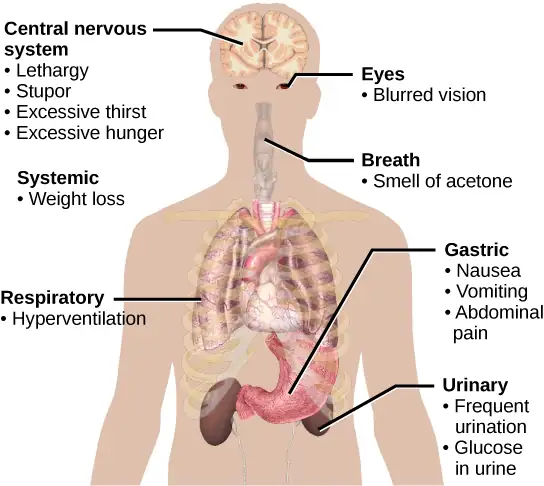
When blood glucose levels decline below normal levels, for example between meals or when glucose is utilized rapidly during exercise, the hormone glucagon is released from the alpha cells of the pancreas. Glucagon raises blood glucose levels, eliciting what is called a hyperglycemic effect, by stimulating the breakdown of glycogen to glucose in skeletal muscle cells and liver cells in a process called glycogenolysis. Glucose can then be utilized as energy by muscle cells and released into circulation by the liver cells. Glucagon also stimulates absorption of amino acids from the blood by the liver, which then converts them to glucose. This process of glucose synthesis is called gluconeogenesis. Glucagon also stimulates adipose cells to release fatty acids into the blood. These actions mediated by glucagon result in an increase in blood glucose levels to normal homeostatic levels. Rising blood glucose levels inhibit further glucagon release by the pancreas via a negative feedback mechanism. In this way, insulin and glucagon work together to maintain homeostatic glucose levels, as shown in Figure 37.11.
Visual Connection
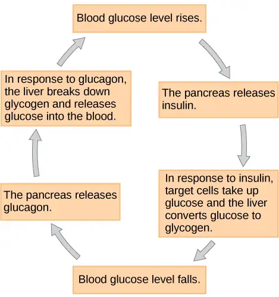
Pancreatic tumors may cause excess secretion of glucagon. Type I diabetes results from the failure of the pancreas to produce insulin. Which of the following statement about these two conditions is true?
- A pancreatic tumor and type I diabetes will have the opposite effects on blood sugar levels.
- A pancreatic tumor and type I diabetes will both cause hyperglycemia.
- A pancreatic tumor and type I diabetes will both cause hypoglycemia.
- Both pancreatic tumors and type I diabetes result in the inability of cells to take up glucose.
Regulation of Metabolic Rates by Thyroid Hormones¶
The basal metabolic rate, which is the amount of calories required by the body at rest, is determined by two hormones produced by the thyroid gland: thyroxine, also known as tetraiodothyronine or T4, and triiodothyronine, also known as T3. These hormones affect nearly every cell in the body except for the adult brain, uterus, testes, blood cells, and spleen. They are transported across the plasma membrane of target cells and bind to receptors on the mitochondria resulting in increased ATP production. In the nucleus, T3and T4activate genes involved in energy production and glucose oxidation. This results in increased rates of metabolism and body heat production, which is known as the hormone’s calorigenic effect.
T3and T4release from the thyroid gland is stimulated by thyroid-stimulating hormone (TSH), which is produced by the anterior pituitary. TSH binding at the receptors of the follicle of the thyroid triggers the production of T3 and T4 from a glycoprotein called thyroglobulin. Thyroglobulin is present in the follicles of the thyroid, and is converted into thyroid hormones with the addition of iodine. Iodine is formed from iodide ions that are actively transported into the thyroid follicle from the bloodstream. A peroxidase enzyme then attaches the iodine to the tyrosine amino acid found in thyroglobulin. T3 has three iodine ions attached, while T4 has four iodine ions attached. T3 and T4 are then released into the bloodstream, with T4 being released in much greater amounts than T3. As T3 is more active than T4 and is responsible for most of the effects of thyroid hormones, tissues of the body convert T4 to T3 by the removal of an iodine ion. Most of the released T3and T4becomes attached to transport proteins in the bloodstream and is unable to cross the plasma membrane of cells. These protein-bound molecules are only released when blood levels of the unattached hormone begin to decline. In this way, a week’s worth of reserve hormone is maintained in the blood. Increased T3and T4levels in the blood inhibit the release of TSH, which results in lower T3and T4release from the thyroid.
The follicular cells of the thyroid require iodides (anions of iodine) in order to synthesize T3and T4. Iodides obtained from the diet are actively transported into follicle cells resulting in a concentration that is approximately 30 times higher than in blood. The typical diet in North America provides more iodine than required due to the addition of iodide to table salt. Inadequate iodine intake, which occurs in many developing countries, results in an inability to synthesize T3and T4hormones. The thyroid gland enlarges in a condition called goiter, which is caused by overproduction of TSH without the formation of thyroid hormone. Thyroglobulin is contained in a fluid called colloid, and TSH stimulation results in higher levels of colloid accumulation in the thyroid. In the absence of iodine, this is not converted to thyroid hormone, and colloid begins to accumulate more and more in the thyroid gland, leading to goiter.
Disorders can arise from both the underproduction and overproduction of thyroid hormones. Hypothyroidism, underproduction of the thyroid hormones, can cause a low metabolic rate leading to weight gain, sensitivity to cold, and reduced mental activity, among other symptoms. In children, hypothyroidism can cause cretinism, which can lead to intellectual disabilities and growth defects. Hyperthyroidism, the overproduction of thyroid hormones, can lead to an increased metabolic rate and its effects: weight loss, excess heat production, sweating, and an increased heart rate. Graves’ disease is one example of a hyperthyroid condition.
Hormonal Control of Blood Calcium Levels¶
Regulation of blood calcium concentrations is important for generation of muscle contractions and nerve impulses, which are electrically stimulated. If calcium levels get too high, membrane permeability to sodium decreases and membranes become less responsive. If calcium levels get too low, membrane permeability to sodium increases and convulsions or muscle spasms can result.
Blood calcium levels are regulated by parathyroid hormone (PTH), which is produced by the parathyroid glands, as illustrated in Figure 37.12. PTH is released in response to low blood Ca2+ levels. PTH increases Ca2+levels by targeting the skeleton, the kidneys, and the intestine. In the skeleton, PTH stimulates osteoclasts, which causes bone to be reabsorbed, releasing Ca2+from bone into the blood. PTH also inhibits osteoblasts, reducing Ca2+deposition in bone. In the intestines, PTH increases dietary Ca2+ absorption, and in the kidneys, PTH stimulates reabsorption of the Ca2+. While PTH acts directly on the kidneys to increase Ca2+ reabsorption, its effects on the intestine are indirect. PTH triggers the formation of calcitriol, an active form of vitamin D, which acts on the intestines to increase absorption of dietary calcium. PTH release is inhibited by rising blood calcium levels.
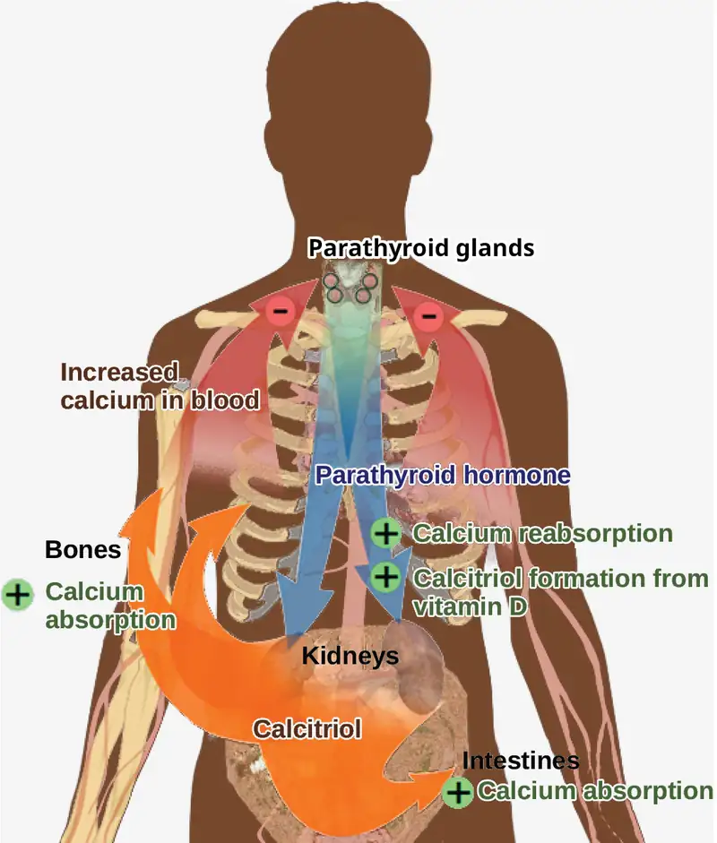
Hyperparathyroidism results from an overproduction of parathyroid hormone. This results in excessive calcium being removed from bones and introduced into blood circulation, producing structural weakness of the bones, which can lead to deformation and fractures, plus nervous system impairment due to high blood calcium levels. Hypoparathyroidism, the underproduction of PTH, results in extremely low levels of blood calcium, which causes impaired muscle function and may result in tetany (severe sustained muscle contraction).
The hormone calcitonin, which is produced by the parafollicular or C cells of the thyroid, has the opposite effect on blood calcium levels as does PTH. Calcitonin decreases blood calcium levels by inhibiting osteoclasts, stimulating osteoblasts, and stimulating calcium excretion by the kidneys. This results in calcium being added to the bones to promote structural integrity. Calcitonin is most important in children (when it stimulates bone growth), during pregnancy (when it reduces bone loss), and during prolonged starvation (because it reduces bone mass loss). In healthy nonpregnant, unstarved adults, the role of calcitonin is unclear.
Hormonal Regulation of Growth¶
Hormonal regulation is required for the growth and replication of most cells in the body. Growth hormone (GH), produced by the anterior portion of the pituitary gland, accelerates the rate of protein synthesis, particularly in skeletal muscle and bones. Growth hormone has direct and indirect mechanisms of action. The first direct action of GH is stimulation of triglyceride breakdown (lipolysis) and release into the blood by adipocytes. This results in a switch by most tissues from utilizing glucose as an energy source to utilizing fatty acids. This process is called a glucose-sparing effect. In another direct mechanism, GH stimulates glycogen breakdown in the liver; the glycogen is then released into the blood as glucose. Blood glucose levels increase as most tissues are utilizing fatty acids instead of glucose for their energy needs. The GH mediated increase in blood glucose levels is called a diabetogenic effect because it is similar to the high blood glucose levels seen in diabetes mellitus.
The indirect mechanism of GH action is mediated by insulin-like growth factors (IGFs) or somatomedins, which are a family of growth-promoting proteins produced by the liver, which stimulates tissue growth. IGFs stimulate the uptake of amino acids from the blood, allowing the formation of new proteins, particularly in skeletal muscle cells, cartilage cells, and other target cells, as shown in Figure 37.13. This is especially important after a meal, when glucose and amino acid concentration levels are high in the blood. GH levels are regulated by two hormones produced by the hypothalamus. GH release is stimulated by growth hormone-releasing hormone (GHRH) and is inhibited by growth hormone-inhibiting hormone (GHIH), also called somatostatin.
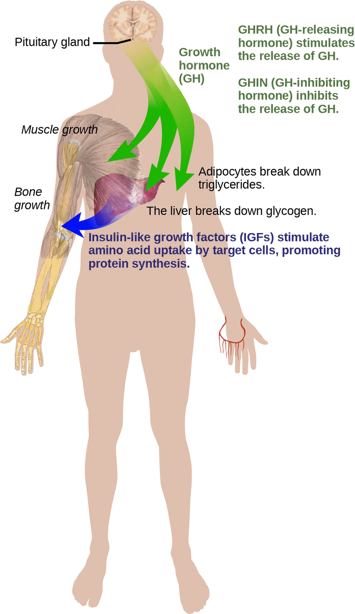
A balanced production of growth hormone is critical for proper development. Underproduction of GH in adults does not appear to cause any abnormalities, but in children it can result in pituitary dwarfism, resulting in abnormally short stature with normal body proportions. The height of such individuals is most frequently less than 4 feet (122 cm) in height. Oversecretion of growth hormone can lead to gigantism in children, causing excessive growth. In some documented cases, individuals can reach heights of over eight feet. In adults, excessive GH can lead to acromegaly, a condition in which there is enlargement of bones in the face, hands, and feet that are still capable of growth.
Hormonal Regulation of Stress¶
When a threat or danger is perceived, the body responds by releasing hormones that will ready it for the “fight-or-flight” response. The effects of this response are familiar to anyone who has been in a stressful situation: increased heart rate, dry mouth, and hair standing up.
Evolution Connection: Fight-or-Flight Response
Interactions of the endocrine hormones have evolved to ensure the body’s internal environment remains stable. Stressors are stimuli that disrupt homeostasis. The sympathetic division of the vertebrate autonomic nervous system has evolved the fight-or-flight response to counter stress-induced disruptions of homeostasis. In the initial alarm phase, the sympathetic nervous system stimulates an increase in energy levels through increased blood glucose levels. This prepares the body for physical activity that may be required to respond to stress: to either fight for survival or to flee from danger.
However, some stresses, such as illness or injury, can last for a long time. Glycogen reserves, which provide energy in the short-term response to stress, are exhausted after several hours and cannot meet long-term energy needs. If glycogen reserves were the only energy source available, neural functioning could not be maintained once the reserves became depleted due to the nervous system’s high requirement for glucose. In this situation, the body has evolved a response to counter long-term stress through the actions of the glucocorticoids, which ensure that long-term energy requirements can be met. The glucocorticoids mobilize lipid and protein reserves, stimulate gluconeogenesis, conserve glucose for use by neural tissue, and stimulate the conservation of salts and water. The mechanisms to maintain homeostasis that are described here are those observed in the human body. However, the fight-or-flight response exists in some form in all vertebrates.
The sympathetic nervous system regulates the stress response via the hypothalamus. Stressful stimuli cause the hypothalamus to signal the adrenal medulla (which mediates short-term stress responses) via nerve impulses, and the adrenal cortex, which mediates long-term stress responses, via the hormone adrenocorticotropic hormone (ACTH), which is produced by the anterior pituitary.
Short-term Stress Response¶
When presented with a stressful situation, the body responds by calling for the release of hormones that provide a burst of energy. The hormones epinephrine (also known as adrenaline) and norepinephrine (also known as noradrenaline) are released by the adrenal medulla. How do these hormones provide a burst of energy? Epinephrine and norepinephrine increase blood glucose levels by stimulating the liver and skeletal muscles to break down glycogen and by stimulating glucose release by liver cells. Additionally, these hormones increase oxygen availability to cells by increasing the heart rate and dilating the bronchioles. The hormones also prioritize body function by increasing blood supply to essential organs such as the heart, brain, and skeletal muscles, while restricting blood flow to organs not in immediate need, such as the skin, digestive system, and kidneys. Epinephrine and norepinephrine are collectively called catecholamines.
Interactive
Watch this Discovery Channel animation describing the flight-or-flight response.
Long-term Stress Response¶
Long-term stress response differs from short-term stress response. The body cannot sustain the bursts of energy mediated by epinephrine and norepinephrine for long times. Instead, other hormones come into play. In a long-term stress response, the hypothalamus triggers the release of ACTH from the anterior pituitary gland. The adrenal cortex is stimulated by ACTH to release steroid hormones called corticosteroids. Corticosteroids turn on transcription of certain genes in the nuclei of target cells. They change enzyme concentrations in the cytoplasm and affect cellular metabolism. There are two main corticosteroids: glucocorticoids such as cortisol, and mineralocorticoids such as aldosterone. These hormones target the breakdown of fat into fatty acids in the adipose tissue. The fatty acids are released into the bloodstream for other tissues to use for ATP production. The glucocorticoids primarily affect glucose metabolism by stimulating glucose synthesis. Glucocorticoids also have anti-inflammatory properties through inhibition of the immune system. For example, cortisone is used as an anti-inflammatory medication; however, it cannot be used long term as it increases susceptibility to disease due to its immune-suppressing effects.
Mineralocorticoids function to regulate ion and water balance of the body. The hormone aldosterone stimulates the reabsorption of water and sodium ions in the kidney, which results in increased blood pressure and volume.
Hypersecretion of glucocorticoids can cause a condition known as Cushing’s disease, characterized by a shifting of fat storage areas of the body. This can cause the accumulation of adipose tissue in the face and neck, and excessive glucose in the blood. Hyposecretion of the corticosteroids can cause Addison’s disease, which may result in bronzing of the skin, hypoglycemia, and low electrolyte levels in the blood.
37.4 Regulation of Hormone Production¶
Learning Objectives
By the end of this section, you will be able to do the following:
- Explain how hormone production is regulated
- Discuss the different stimuli that control hormone levels in the body
Hormone production and release are primarily controlled by negative feedback. In negative feedback systems, a stimulus elicits the release of a substance; once the substance reaches a certain level, it sends a signal that stops further release of the substance. In this way, the concentration of hormones in blood is maintained within a narrow range. For example, the anterior pituitary signals the thyroid to release thyroid hormones. Increasing levels of these hormones in the blood then give feedback to the hypothalamus and anterior pituitary to inhibit further signaling to the thyroid gland, as illustrated in Figure 37.14. There are three mechanisms by which endocrine glands are stimulated to synthesize and release hormones: humoral stimuli, hormonal stimuli, and neural stimuli.
Visual Connection
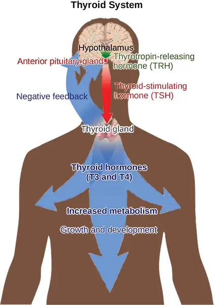
Hyperthyroidism is a condition in which the thyroid gland is overactive. Hypothyroidism is a condition in which the thyroid gland is underactive. Which of the conditions are the following two patients most likely to have?
Patient A has symptoms including weight gain, cold sensitivity, low heart rate, and fatigue.
Patient B has symptoms including weight loss, profuse sweating, increased heart rate, and difficulty sleeping.
Humoral Stimuli¶
The term “humoral” is derived from the term “humor,” which refers to bodily fluids such as blood. A humoral stimulus refers to the control of hormone release in response to changes in extracellular fluids such as blood or the ion concentration in the blood. For example, a rise in blood glucose levels triggers the pancreatic release of insulin. Insulin causes blood glucose levels to drop, which signals the pancreas to stop producing insulin in a negative feedback loop.
Hormonal Stimuli¶
Hormonal stimuli refers to the release of a hormone in response to another hormone. A number of endocrine glands release hormones when stimulated by hormones released by other endocrine glands. For example, the hypothalamus produces hormones that stimulate the anterior portion of the pituitary gland. The anterior pituitary in turn releases hormones that regulate hormone production by other endocrine glands. The anterior pituitary releases the thyroid-stimulating hormone, which then stimulates the thyroid gland to produce the hormones T3 and T4. As blood concentrations of T3 and T4 rise, they inhibit both the pituitary and the hypothalamus in a negative feedback loop.
Neural Stimuli¶
In some cases, the nervous system directly stimulates endocrine glands to release hormones, which is referred to as neural stimuli. Recall that in a short-term stress response, the hormones epinephrine and norepinephrine are important for providing the bursts of energy required for the body to respond. Here, neuronal signaling from the sympathetic nervous system directly stimulates the adrenal medulla to release the hormones epinephrine and norepinephrine in response to stress.
37.5 Endocrine Glands¶
Learning Objectives
By the end of this section, you will be able to do the following:
- Describe the role of different glands in the endocrine system
- Explain how the different glands work together to maintain homeostasis
Both the endocrine and nervous systems use chemical signals to communicate and regulate the body's physiology. The endocrine system releases hormones that act on target cells to regulate development, growth, energy metabolism, reproduction, and many behaviors. The nervous system releases neurotransmitters or neurohormones that regulate neurons, muscle cells, and endocrine cells. Because the neurons can regulate the release of hormones, the nervous and endocrine systems work in a coordinated manner to regulate the body's physiology.
Hypothalamic-Pituitary Axis¶
The hypothalamus in vertebrates integrates the endocrine and nervous systems. The hypothalamus is an endocrine organ located in the diencephalon of the brain. It receives input from the body and other brain areas and initiates endocrine responses to environmental changes. The hypothalamus acts as an endocrine organ, synthesizing hormones and transporting them along axons to the posterior pituitary gland. It synthesizes and secretes regulatory hormones that control the endocrine cells in the anterior pituitary gland. The hypothalamus contains autonomic centers that control endocrine cells in the adrenal medulla via neuronal control.
The pituitary gland, sometimes called the hypophysis or “master gland” is located at the base of the brain in the sella turcica, a groove of the sphenoid bone of the skull, illustrated in Figure 37.15. It is attached to the hypothalamus via a stalk called the pituitary stalk (or infundibulum). The anterior portion of the pituitary gland is regulated by releasing or release-inhibiting hormones produced by the hypothalamus, and the posterior pituitary receives signals via neurosecretory cells to release hormones produced by the hypothalamus. The pituitary has two distinct regions—the anterior pituitary and the posterior pituitary—which between them secrete nine different peptide or protein hormones. The posterior lobe of the pituitary gland contains axons of the hypothalamic neurons.
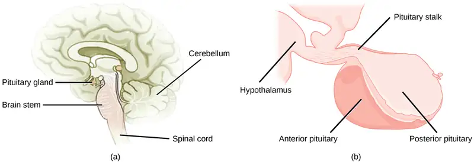
Anterior Pituitary¶
The anterior pituitary gland, or adenohypophysis, is surrounded by a capillary network that extends from the hypothalamus, down along the infundibulum, and to the anterior pituitary. This capillary network is a part of the hypophyseal portal system that carries substances from the hypothalamus to the anterior pituitary and hormones from the anterior pituitary into the circulatory system. A portal system carries blood from one capillary network to another; therefore, the hypophyseal portal system allows hormones produced by the hypothalamus to be carried directly to the anterior pituitary without first entering the circulatory system.
The anterior pituitary produces seven hormones: growth hormone (GH), prolactin (PRL), thyroid-stimulating hormone (TSH), melanin-stimulating hormone (MSH), adrenocorticotropic hormone (ACTH), follicle-stimulating hormone (FSH), and luteinizing hormone (LH). Anterior pituitary hormones are sometimes referred to as tropic hormones, because they control the functioning of other organs. While these hormones are produced by the anterior pituitary, their production is controlled by regulatory hormones produced by the hypothalamus. These regulatory hormones can be releasing hormones or inhibiting hormones, causing more or less of the anterior pituitary hormones to be secreted. These travel from the hypothalamus through the hypophyseal portal system to the anterior pituitary where they exert their effect. Negative feedback then regulates how much of these regulatory hormones are released and how much anterior pituitary hormone is secreted.
Posterior Pituitary¶
The posterior pituitary is significantly different in structure from the anterior pituitary. It is a part of the brain, extending down from the hypothalamus, and contains mostly nerve fibers and neuroglial cells, which support axons that extend from the hypothalamus to the posterior pituitary. The posterior pituitary and the infundibulum together are referred to as the neurohypophysis.
The hormones antidiuretic hormone (ADH), also known as vasopressin, and oxytocin are produced by neurons in the hypothalamus and transported within these axons along the infundibulum to the posterior pituitary. They are released into the circulatory system via neural signaling from the hypothalamus. These hormones are considered to be posterior pituitary hormones, even though they are produced by the hypothalamus, because that is where they are released into the circulatory system. The posterior pituitary itself does not produce hormones, but instead stores hormones produced by the hypothalamus and releases them into the bloodstream.
Thyroid Gland¶
The thyroid gland is located in the neck, just below the larynx and in front of the trachea, as shown in Figure 37.16. It is a butterfly-shaped gland with two lobes that are connected by the isthmus. It has a dark red color due to its extensive vascular system. When the thyroid swells due to dysfunction, it can be felt under the skin of the neck.
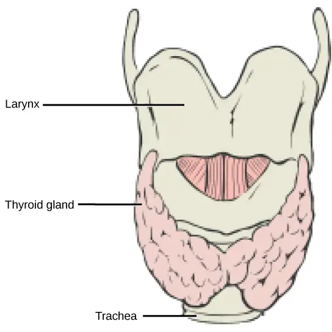
The thyroid gland is made up of many spherical thyroid follicles, which are lined with a simple cuboidal epithelium. These follicles contain a viscous fluid, called colloid, which stores the glycoprotein thyroglobulin, the precursor to the thyroid hormones. The follicles produce hormones that can be stored in the colloid or released into the surrounding capillary network for transport to the rest of the body via the circulatory system.
Thyroid follicle cells synthesize the hormone thyroxine, which is also known as T4 because it contains four atoms of iodine, and triiodothyronine, also known as T3 because it contains three atoms of iodine. Follicle cells are stimulated to release stored T3and T4by thyroid stimulating hormone (TSH), which is produced by the anterior pituitary. These thyroid hormones increase the rates of mitochondrial ATP production.
A third hormone, calcitonin, is produced by parafollicular cells of the thyroid. Calcitonin release is not controlled by TSH, but instead is released when calcium ion concentrations in the blood rise. Calcitonin functions to help regulate calcium concentrations in body fluids. It acts in the bones to inhibit osteoclast activity and in the kidneys to stimulate excretion of calcium. The combination of these two events lowers body fluid levels of calcium.
Parathyroid Glands¶
Most people have four parathyroid glands; however, the number can vary from two to six. These glands are located on the posterior surface of the thyroid gland, as shown in Figure 37.17. Normally, there is a superior gland and an inferior gland associated with each of the thyroid’s two lobes. Each parathyroid gland is covered by connective tissue and contains many secretory cells that are associated with a capillary network.
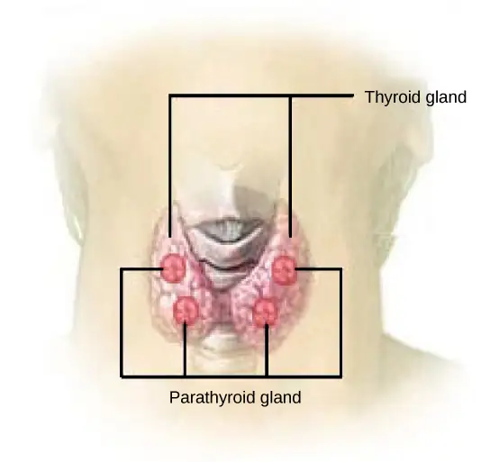
The parathyroid glands produce parathyroid hormone (PTH). PTH increases blood calcium concentrations when calcium ion levels fall below normal. PTH (1) enhances reabsorption of Ca2+ by the kidneys, (2) stimulates osteoclast activity and inhibits osteoblast activity, and (3) it stimulates synthesis and secretion of calcitriol by the kidneys, which enhances Ca2+ absorption by the digestive system. PTH is produced by chief cells of the parathyroid. PTH and calcitonin work in opposition to one another to maintain homeostatic Ca2+ levels in body fluids. Another type of cells, oxyphil cells, exist in the parathyroid but their function is not known.
Adrenal Glands¶
The adrenal glands are associated with the kidneys; one gland is located on top of each kidney as illustrated in Figure 37.18. The adrenal glands consist of an outer adrenal cortex and an inner adrenal medulla. These regions secrete different hormones.
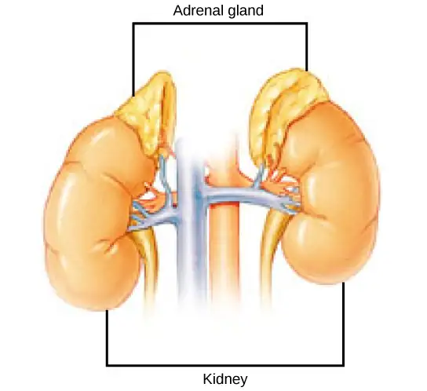
Adrenal Cortex¶
The adrenal cortex is made up of layers of epithelial cells and associated capillary networks. These layers form three distinct regions: an outer zona glomerulosa that produces mineralocorticoids, a middle zona fasciculata that produces glucocorticoids, and an inner zona reticularis that produces androgens.
The main mineralocorticoid is aldosterone, which regulates the concentration of Na+ ions in urine, sweat, pancreas, and saliva. Aldosterone release from the adrenal cortex is stimulated by a decrease in blood concentrations of sodium ions, blood volume, or blood pressure, or by an increase in blood potassium levels.
The three main glucocorticoids are cortisol, corticosterone, and cortisone. The glucocorticoids stimulate the synthesis of glucose and gluconeogenesis (converting a non-carbohydrate to glucose) by liver cells and they promote the release of fatty acids from adipose tissue. These hormones increase blood glucose levels to maintain levels within a normal range between meals. These hormones are secreted in response to ACTH and levels are regulated by negative feedback.
The adrenal cortex also produces small amounts of testosterone precursor, although the role of this additional hormone production is not fully understood. Testosterone is a type of androgen that promotes a suite of characteristics such as the growth and development of the testes and penis, increased skeletal and muscular growth, enlargement of the larynx, increased growth and redistribution of body hair, and increased sexual drive. Testosterone secretion is regulated by both the hypothalamus and the anterior pituitary gland. The hypothalamus sends releasing hormones that stimulate the release of gonadotropins from the anterior pituitary gland. Testosterone produced in small amounts in the adrenal cortex may work with sex hormones released from the gonads.
Adrenal Medulla¶
The adrenal medulla contains large, irregularly shaped cells that are closely associated with blood vessels. These cells are innervated by preganglionic autonomic nerve fibers from the central nervous system.
The adrenal medulla contains two types of secretory cells: one that produces epinephrine (adrenaline) and another that produces norepinephrine (noradrenaline). Epinephrine is the primary adrenal medulla hormone accounting for 75 to 80 percent of its secretions. Epinephrine and norepinephrine increase heart rate, breathing rate, cardiac muscle contractions, blood pressure, and blood glucose levels. They also accelerate the breakdown of glucose in skeletal muscles and stored fats in adipose tissue.
The release of epinephrine and norepinephrine is stimulated by neural impulses from the sympathetic nervous system. Secretion of these hormones is stimulated by acetylcholine release from preganglionic sympathetic fibers innervating the adrenal medulla. These neural impulses originate from the hypothalamus in response to stress to prepare the body for the fight-or-flight response.
Pancreas¶
The pancreas, illustrated in Figure 37.19, is an elongated organ that is located between the stomach and the proximal portion of the small intestine. It contains both exocrine cells that excrete digestive enzymes and endocrine cells that release hormones. It is sometimes referred to as a heterocrine gland because it has both endocrine and exocrine functions.
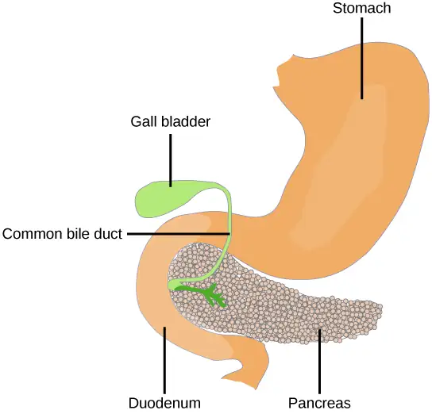
The endocrine cells of the pancreas form clusters called pancreatic islets or the islets of Langerhans, as visible in the micrograph shown in Figure 37.20. The pancreatic islets contain two primary cell types: alpha cells, which produce the hormone glucagon, and beta cells, which produce the hormone insulin. These hormones regulate blood glucose levels. As blood glucose levels decline, alpha cells release glucagon to raise the blood glucose levels by increasing rates of glycogen breakdown and glucose release by the liver. When blood glucose levels rise, such as after a meal, beta cells release insulin to lower blood glucose levels by increasing the rate of glucose uptake in most body cells, and by increasing glycogen synthesis in skeletal muscles and the liver. Together, glucagon and insulin regulate blood glucose levels.
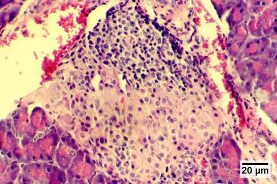
Pineal Gland¶
The pineal gland produces melatonin. The rate of melatonin production is affected by the photoperiod. Collaterals from the visual pathways innervate the pineal gland. During the day photoperiod, little melatonin is produced; however, melatonin production increases during the dark photoperiod (night). In some mammals, melatonin has an inhibitory effect on reproductive functions by decreasing production and maturation of sperm, oocytes, and reproductive organs. Melatonin is an effective antioxidant, protecting the CNS from free radicals such as nitric oxide and hydrogen peroxide. Lastly, melatonin is involved in biological rhythms, particularly circadian rhythms such as the sleep-wake cycle and eating habits.
Gonads¶
The gonads—the testes and ovaries—produce steroid hormones. The testes produce androgens, testosterone being the most prominent, which allow for the growth and development of the testes and penis, increased skeletal and muscular growth, enlargement of the larynx, increased growth and redistribution of body hair, and the production of sperm cells. The ovaries produce estradiol and progesterone, which cause secondary sex characteristics and prepare the body for childbirth.
Table 37.1
| Endocrine Glands and their Associated Hormones | ||
|---|---|---|
| Endocrine Gland | Associated Hormones | Effect |
| Hypothalamus | releasing and inhibiting hormones | regulate hormone release from pituitary gland; produce oxytocin; produce uterine contractions and milk secretion in breast tissue |
| antidiuretic hormone (ADH) | water reabsorption from kidneys; vasoconstriction to increase blood pressure | |
| Pituitary (Anterior) | growth hormone (GH) | promotes growth of body tissues, protein synthesis; metabolic functions |
| prolactin (PRL) | promotes milk production | |
| thyroid stimulating hormone (TSH) | stimulates thyroid hormone release | |
| adrenocorticotropic hormone (ACTH) | stimulates hormone release by adrenal cortex, glucocorticoids | |
| follicle-stimulating hormone (FSH) | stimulates gamete production (both ova and sperm); secretion of estradiol | |
| luteinizing hormone (LH) | stimulates androgen production by gonads; ovulation, secretion of progesterone | |
| melanocyte-stimulating hormone (MSH) | stimulates melanocytes of the skin increasing melanin pigment production. | |
| Pituitary (Posterior) | antidiuretic hormone (ADH) | stimulates water reabsorption by kidneys |
| oxytocin | stimulates uterine contractions during childbirth; milk ejection; stimulates ductus deferens and prostate gland contraction during emission | |
| Thyroid | thyroxine, triiodothyronine | stimulate and maintain metabolism; growth and development |
| calcitonin | reduces blood Ca2+ levels | |
| Parathyroid | parathyroid hormone (PTH) | increases blood Ca2+levels |
| Adrenal (Cortex) | aldosterone | increases blood Na+ levels; increases K+ secretion |
| cortisol, corticosterone, cortisone | increase blood glucose levels; anti-inflammatory effects | |
| Adrenal (Medulla) | epinephrine, norepinephrine | stimulate fight-or-flight response; increase blood glucose levels; increase metabolic activities |
| Pancreas | insulin | reduces blood glucose levels |
| glucagon | increases blood glucose levels | |
| Pineal gland | melatonin | regulates some biological rhythms and protects CNS from free radicals |
| Testes | androgens | regulate, promote, increase or maintain sperm production; a suite of characteristics including growth and development of the testes and penis, increased skeletal and muscular growth, enlargement of the larynx, and increased growth and redistribution of body hair |
| Ovaries | estrogen | promotes uterine lining growth; a suite of characteristics including increased development of breast tissue, redistribution of fat towards hips, legs, and breast, and the maturation of the uterus and vagina |
| progestins | promote and maintain uterine lining growth | |
Organs with Secondary Endocrine Functions¶
There are several organs whose primary functions are non-endocrine but that also possess endocrine functions. These include the heart, kidneys, intestines, thymus, gonads, and adipose tissue.
The heart possesses endocrine cells in the walls of the atria that are specialized cardiac muscle cells. These cells release the hormone atrial natriuretic peptide (ANP) in response to increased blood volume. High blood volume causes the cells to be stretched, resulting in hormone release. ANP acts on the kidneys to reduce the reabsorption of Na+, causing Na+ and water to be excreted in the urine. ANP also reduces the amounts of renin released by the kidneys and aldosterone released by the adrenal cortex, further preventing the retention of water. In this way, ANP causes a reduction in blood volume and blood pressure, and reduces the concentration of Na+ in the blood.
The gastrointestinal tract produces several hormones that aid in digestion. The endocrine cells are located in the mucosa of the GI tract throughout the stomach and small intestine. Some of the hormones produced include gastrin, secretin, and cholecystokinin, which are secreted in the presence of food, and some of which act on other organs such as the pancreas, gallbladder, and liver. They trigger the release of gastric juices, which help to break down and digest food in the GI tract.
While the adrenal glands associated with the kidneys are major endocrine glands, the kidneys themselves also possess endocrine function. Renin is released in response to decreased blood volume or pressure and is part of the renin-angiotensin-aldosterone system that leads to the release of aldosterone. Aldosterone then causes the retention of Na+ and water, raising blood volume. The kidneys also release calcitriol, which aids in the absorption of Ca2+ and phosphate ions. Erythropoietin (EPO) is a protein hormone that triggers the formation of red blood cells in the bone marrow. EPO is released in response to low oxygen levels. Because red blood cells are oxygen carriers, increased production results in greater oxygen delivery throughout the body. EPO has been used by athletes to improve performance, as greater oxygen delivery to muscle cells allows for greater endurance. Because red blood cells increase the viscosity of blood, artificially high levels of EPO can cause severe health risks.
The thymus is found behind the sternum; it is most prominent in infants, becoming smaller in size through adulthood. The thymus produces hormones referred to as thymosins, which contribute to the development of the immune response.
Adipose tissue is a connective tissue found throughout the body. It produces the hormone leptin in response to food intake. Leptin increases the activity of anorexigenic neurons and decreases that of orexigenic neurons, producing a feeling of satiety after eating, thus affecting appetite and reducing the urge for further eating. Leptin is also associated with reproduction. It must be present for GnRH and gonadotropin synthesis to occur. Extremely thin females may enter puberty late; however, if adipose levels increase, more leptin will be produced, improving fertility.
Chapter Review¶
Key Terms¶
- acromegaly
- condition caused by overproduction of GH in adults
- Addison’s disease
- disorder caused by the hyposecretion of corticosteroids
- adenylate cyclase
- an enzyme that catalyzes the conversion of ATP to cyclic AMP
- adrenal cortex
- outer portion of adrenal glands that produces corticosteroids
- adrenal gland
- endocrine glands associated with the kidneys
- adrenal medulla
- inner portion of adrenal glands that produces epinephrine and norepinephrine
- adrenocorticotropic hormone (ACTH)
- hormone released by the anterior pituitary, which stimulates the adrenal cortex to release corticosteroids during the long-term stress response
- aldosterone
- steroid hormone produced by the adrenal cortex that stimulates the reabsorption of Na+ from extracellular fluids and secretion of K+
- alpha cell
- endocrine cell of the pancreatic islets that produces the hormone glucagon
- amino acid-derived hormone
- hormone derived from amino acids
- androgen
- male sex hormone such as testosterone
- anterior pituitary
- portion of the pituitary gland that produces six hormones; also called adenohypophysis
- antidiuretic hormone (ADH)
- hormone produced by the hypothalamus and released by the posterior pituitary that increases water reabsorption by the kidneys
- atrial natriuretic peptide (ANP)
- hormone produced by the heart to reduce blood volume, pressure, and Na+ concentration
- beta cell
- endocrine cell of the pancreatic islets that produces the hormone insulin
- calcitonin
- hormone produced by the parafollicular cells of the thyroid gland that functions to lower blood Ca2+ levels and promote bone growth
- colloid
- fluid inside the thyroid gland that contains the glycoprotein thyroglobulin
- corticosteroid
- hormone released by the adrenal cortex in response to long-term stress
- cortisol
- glucocorticoid produced in response to stress
- Cushing’s disease
- disorder caused by the hypersecretion of glucocorticoids
- diabetes insipidus
- disorder caused by underproduction of ADH
- diabetes mellitus
- disorder caused by low levels of insulin activity
- diabetogenic effect
- effect of GH that causes blood glucose levels to rise similar to diabetes mellitus
- down-regulation
- a decrease in the number of hormone receptors in response to increased hormone levels
- endocrine gland
- gland that secretes hormones into the surrounding interstitial fluid, which then diffuse into blood and are carried to various organs and tissues within the body
- epinephrine
- hormone released by the adrenal medulla in response to a short term stress
- erythropoietin (EPO)
- hormone produced by the kidneys to stimulate red blood cell production in the bone marrow
- estrogens
- a group of steroid hormones, including estradiol and several others, that are produced by the ovaries and elicit a suite of characteristics (including increased development of breast tissue, redistribution of fat towards hips, legs, and breast, and the maturation of the uterus and vagina) as well as control the maturation of the ova
- first messenger
- the hormone that binds to a plasma membrane hormone receptor to trigger a signal transduction pathway
- follicle-stimulating hormone (FSH)
- hormone produced by the anterior pituitary that stimulates gamete production
- G-protein
- a membrane protein activated by the hormone first messenger to activate formation of cyclic AMP
- gigantism
- condition caused by overproduction of GH in children
- glucagon
- hormone produced by the alpha cells of the pancreas in response to low blood sugar; functions to raise blood sugar levels
- glucocorticoid
- corticosteroid that affects glucose metabolism
- gluconeogenesis
- synthesis of glucose from amino acids
- glucose-sparing effect
- effect of GH that causes tissues to use fatty acids instead of glucose as an energy source
- glycogenolysis
- breakdown of glycogen into glucose
- goiter
- enlargement of the thyroid gland caused by insufficient dietary iodine levels
- gonadotropin
- hormone that regulates the gonads, including FSH and LH
- growth hormone (GH)
- hormone produced by the anterior pituitary that promotes protein synthesis and body growth
- growth hormone-inhibiting hormone (GHIH)
- hormone produced by the hypothalamus that inhibits growth hormone production, also called somatostatin
- growth hormone-releasing hormone (GHRH)
- hormone released by the hypothalamus that triggers the release of GH
- hormonal stimuli
- release of a hormone in response to another hormone
- hormone receptor
- the cellular protein that binds to a hormone
- humoral stimuli
- control of hormone release in response to changes in extracellular fluids such as blood or the ion concentration in the blood
- hyperglycemia
- high blood sugar level
- hyperthyroidism
- overactivity of the thyroid gland
- hypoglycemia
- low blood sugar level
- hypophyseal portal system
- system of blood vessels that carries hormones from the hypothalamus to the anterior pituitary
- hypothyroidism
- underactivity of the thyroid gland
- insulin
- hormone produced by the beta cells of the pancreas in response to high blood glucose levels; functions to lower blood glucose levels
- insulin-like growth factor (IGF)
- growth-promoting protein produced by the liver
- intracellular hormone receptor
- a hormone receptor in the cytoplasm or nucleus of a cell
- islets of Langerhans (pancreatic islets)
- endocrine cells of the pancreas
- isthmus
- tissue mass that connects the two lobes of the thyroid gland
- leptin
- hormone produced by adipose tissue that promotes feelings of satiety and reduces hunger
- lipid-derived hormone
- hormone derived mostly from cholesterol
- mineralocorticoid
- corticosteroid that affects ion and water balance
- neural stimuli
- stimulation of endocrine glands by the nervous system
- norepinephrine
- hormone released by the adrenal medulla in response to a short-term stress hormone production by the gonads
- osmoreceptor
- receptor in the hypothalamus that monitors the concentration of electrolytes in the blood
- oxytocin
- hormone released by the posterior pituitary to stimulate uterine contractions during childbirth and milk let-down in the mammary glands
- pancreas
- organ located between the stomach and the small intestine that contains exocrine and endocrine cells
- parafollicular cell
- thyroid cell that produces the hormone calcitonin
- parathyroid gland
- gland located on the surface of the thyroid that produces parathyroid hormone
- parathyroid hormone (PTH)
- hormone produced by the parathyroid glands in response to low blood Ca2+ levels; functions to raise blood Ca2+ levels
- peptide hormone
- hormone composed of a polypeptide chain
- phosphodiesterase (PDE)
- enzyme that deactivates cAMP, stopping hormone activity
- pituitary dwarfism
- condition caused by underproduction of GH in children
- pituitary gland
- endocrine gland located at the base of the brain composed of an anterior and posterior region; also called hypophysis
- pituitary stalk
- (also, infundibulum) stalk that connects the pituitary gland to the hypothalamus
- plasma membrane hormone receptor
- a hormone receptor on the surface of the plasma membrane of a cell
- posterior pituitary
- extension of the brain that releases hormones produced by the hypothalamus; along with the infundibulum, it is also referred to as the neurohypophysis
- prolactin (PRL)
- hormone produced by the anterior pituitary that stimulates milk production
- prolactin-inhibiting hormone
- hormone produced by the hypothalamus that inhibits the release of prolactin
- prolactin-releasing hormone
- hormone produced by the hypothalamus that stimulates the release of prolactin
- renin
- enzyme produced by the juxtaglomerular apparatus of the kidneys that reacts with angiotensinogen to cause the release of aldosterone
- thymus
- gland located behind the sternum that produces thymosin hormones that contribute to the development of the immune system
- thyroglobulin
- glycoprotein found in the thyroid that is converted into thyroid hormone
- thyroid gland
- endocrine gland located in the neck that produces thyroid hormones thyroxine and triiodothyronine
- thyroid-stimulating hormone (TSH)
- hormone produced by the anterior pituitary that controls the release of T3 and T4 from the thyroid gland
- thyroxine (tetraiodothyronine, T4)
- thyroid hormone containing 4 iodines that controls the basal metabolic rate
- triiodothyronine (T3)
- thyroid hormone containing 3 iodines that controls the basal metabolic rate
- up-regulation
- an increase in the number of hormone receptors in response to increased hormone levels
Summary¶
37.1 Types of Hormones¶
There are three basic types of hormones: lipid-derived, amino acid-derived, and peptide. Lipid-derived hormones are structurally similar to cholesterol and include steroid hormones such as estradiol and testosterone. Amino acid-derived hormones are relatively small molecules and include the adrenal hormones epinephrine and norepinephrine. Peptide hormones are polypeptide chains or proteins and include the pituitary hormones, antidiuretic hormone (vasopressin), and oxytocin.
37.2 How Hormones Work¶
Hormones cause cellular changes by binding to receptors on target cells. The number of receptors on a target cell can increase or decrease in response to hormone activity. Hormones can affect cells directly through intracellular hormone receptors or indirectly through plasma membrane hormone receptors.
Lipid-derived (soluble) hormones can enter the cell by diffusing across the plasma membrane and binding to DNA to regulate gene transcription and to change the cell’s activities by inducing production of proteins that affect, in general, the long-term structure and function of the cell. Lipid insoluble hormones bind to receptors on the plasma membrane surface and trigger a signaling pathway to change the cell’s activities by inducing production of various cell products that affect the cell in the short-term. The hormone is called a first messenger and the cellular component is called a second messenger. G-proteins activate the second messenger (cyclic AMP), triggering the cellular response. Response to hormone binding is amplified as the signaling pathway progresses. Cellular responses to hormones include the production of proteins and enzymes and altered membrane permeability.
37.3 Regulation of Body Processes¶
Water levels in the body are controlled by antidiuretic hormone (ADH), which is produced in the hypothalamus and triggers the reabsorption of water by the kidneys. Underproduction of ADH can cause diabetes insipidus. Aldosterone, a hormone produced by the adrenal cortex of the kidneys, enhances Na+ reabsorption from the extracellular fluids and subsequent water reabsorption by diffusion. The renin-angiotensin-aldosterone system is one way that aldosterone release is controlled.
The reproductive system is controlled by the gonadotropins follicle-stimulating hormone (FSH) and luteinizing hormone (LH), which are produced by the pituitary gland. Gonadotropin release is controlled by the hypothalamic hormone gonadotropin-releasing hormone (GnRH). FSH stimulates the maturation of sperm cells in testes and is inhibited by the hormone inhibin, while LH stimulates the production of the androgen testosterone. FSH stimulates egg maturation in ovaries, while LH stimulates the production of estrogens and progesterone. Estrogens are a group of steroid hormones produced by the ovaries that trigger increased development of breast tissue, redistribution of fat towards hips, legs, and breast, the maturation of the uterus and vagina, as well as control the maturation of the ova. Within ovarian reproductive systems, the pituitary also produces prolactin, which stimulates milk production after childbirth, and oxytocin, which stimulates uterine contraction during childbirth and milk let-down during suckling.
Insulin is produced by the pancreas in response to rising blood glucose levels and allows cells to utilize blood glucose and store excess glucose for later use. Diabetes mellitus is caused by reduced insulin activity and causes high blood glucose levels, or hyperglycemia. Glucagon is released by the pancreas in response to low blood glucose levels and stimulates the breakdown of glycogen into glucose, which can be used by the body. The body’s basal metabolic rate is controlled by the thyroid hormones thyroxine (T4) and triiodothyronine (T3). The anterior pituitary produces thyroid stimulating hormone (TSH), which controls the release of T3 and T4 from the thyroid gland. Iodine is necessary in the production of thyroid hormone, and the lack of iodine can lead to a condition called goiter.
Parathyroid hormone (PTH) is produced by the parathyroid glands in response to low blood Ca2+ levels. The parafollicular cells of the thyroid produce calcitonin, which reduces blood Ca2+ levels. Growth hormone (GH) is produced by the anterior pituitary and controls the growth rate of muscle and bone. GH action is indirectly mediated by insulin-like growth factors (IGFs). Short-term stress causes the hypothalamus to trigger the adrenal medulla to release epinephrine and norepinephrine, which trigger the fight or flight response. Long-term stress causes the hypothalamus to trigger the anterior pituitary to release adrenocorticotropic hormone (ACTH), which causes the release of corticosteroids, glucocorticoids, and mineralocorticoids, from the adrenal cortex.
37.4 Regulation of Hormone Production¶
Hormone levels are primarily controlled through negative feedback, in which rising levels of a hormone inhibit its further release. The three mechanisms of hormonal release are humoral stimuli, hormonal stimuli, and neural stimuli. Humoral stimuli refers to the control of hormonal release in response to changes in extracellular fluid levels or ion levels. Hormonal stimuli refers to the release of hormones in response to hormones released by other endocrine glands. Neural stimuli refers to the release of hormones in response to neural stimulation.
37.5 Endocrine Glands¶
The pituitary gland is located at the base of the brain and is attached to the hypothalamus by the infundibulum. The anterior pituitary receives products from the hypothalamus by the hypophyseal portal system and produces six hormones. The posterior pituitary is an extension of the brain and releases hormones (antidiuretic hormone and oxytocin) produced by the hypothalamus.
The thyroid gland is located in the neck and is composed of two lobes connected by the isthmus. The thyroid is made up of follicle cells that produce the hormones thyroxine and triiodothyronine. Parafollicular cells of the thyroid produce calcitonin. The parathyroid glands lie on the posterior surface of the thyroid gland and produce parathyroid hormone.
The adrenal glands are located on top of the kidneys and consist of the renal cortex and renal medulla. The adrenal cortex is the outer part of the adrenal gland and produces the corticosteroids, glucocorticoids, and mineralocorticoids. The adrenal medulla is the inner part of the adrenal gland and produces the catecholamines epinephrine and norepinephrine.
The pancreas lies in the abdomen between the stomach and the small intestine. Clusters of endocrine cells in the pancreas form the islets of Langerhans, which are composed of alpha cells that release glucagon and beta cells that release insulin.
Some organs possess endocrine activity as a secondary function but have another primary function. The heart produces the hormone atrial natriuretic peptide, which functions to reduce blood volume, pressure, and Na+ concentration. The gastrointestinal tract produces various hormones that aid in digestion. The kidneys produce renin, calcitriol, and erythropoietin. Adipose tissue produces leptin, which promotes satiety signals in the brain.
Review Questions¶
37.1 Types of Hormones¶
1. A newly discovered hormone contains four amino acids linked together. Under which chemical class would this hormone be classified?
- lipid-derived hormone
- amino acid-derived hormone
- peptide hormone
- glycoprotein
Answer
C
2. Which class of hormones can diffuse through plasma membranes?
- lipid-derived hormones
- amino acid-derived hormones
- peptide hormones
- glycoprotein hormones
Answer
A
3. Why are steroids able to diffuse across the plasma membrane?
- Their transport protein moves them through the membrane.
- They are amphipathic, allowing them to interact with the entire phospholipid.
- Cells express channels that let hormones flow down their concentration gradient into the cells.
- They are non-polar molecules.
Answer
D
37.2 How Hormones Work¶
4. A new antagonist molecule has been discovered that binds to and blocks plasma membrane receptors. What effect will this antagonist have on testosterone, a steroid hormone?
- It will block testosterone from binding to its receptor.
- It will block testosterone from activating cAMP signaling.
- It will increase testosterone-mediated signaling.
- It will not affect testosterone-mediated signaling.
Answer
D
5. What effect will a cAMP inhibitor have on a peptide hormone-mediated signaling pathway?
- It will prevent the hormone from binding its receptor.
- It will prevent activation of a G-protein.
- It will prevent activation of adenylate cyclase.
- It will prevent activation of protein kinases.
Answer
D
6. When insulin binds to its receptor, the complex is endocytosed into the cell. This is an example of ______ in response to hormone signaling.
- cAMP activation
- generating an intracellular receptor
- activation of a hormone response element
- receptor down-regulation
Answer
D
37.3 Regulation of Body Processes¶
7. Drinking alcoholic beverages causes an increase in urine output. This most likely occurs because alcohol:
- inhibits ADH release.
- stimulates ADH release.
- inhibits TSH release.
- stimulates TSH release.
Answer
A
8. FSH and LH release from the anterior pituitary is stimulated by ________.
- TSH
- GnRH
- T3
- PTH
Answer
B
9. What hormone is produced by beta cells of the pancreas?
- T3
- glucagon
- insulin
- T4
Answer
C
10. When blood calcium levels are low, PTH stimulates:
- excretion of calcium from the kidneys.
- excretion of calcium from the intestines.
- osteoblasts.
- osteoclasts.
Answer
D
11. How would mutations that completely ablate the function of the androgen receptor impact the phenotypic development of humans with XY chromosomes?
- Patients would appear phenotypically female.
- Patients would appear phenotypically male with underdeveloped secondary sex characteristics.
- Patients would appear phenotypically male, but cannot produce sperm.
- Patients would express both male and female secondary sex characteristics.
Answer
A
37.4 Regulation of Hormone Production¶
12. A rise in blood glucose levels triggers release of insulin from the pancreas. This mechanism of hormone production is stimulated by:
- humoral stimuli
- hormonal stimuli
- neural stimuli
- negative stimuli
Answer
A
13. Which mechanism of hormonal stimulation would be affected if signaling and hormone release from the hypothalamus was blocked?
- humoral and hormonal stimuli
- hormonal and neural stimuli
- neural and humoral stimuli
- hormonal and negative stimuli
Answer
B
14. A scientist hypothesizes that the pancreas’s hormone production is controlled by neural stimuli. Which observation would support this hypothesis?
- Insulin is produced in response to sudden stress without a rise in blood glucose.
- Insulin is produced in response to a rise in glucagon levels.
- Beta cells express epinephrine receptors.
- Insulin is produced in response to a rise in blood glucose in the brain.
Answer
A
37.5 Endocrine Glands¶
15. Which endocrine glands are associated with the kidneys?
- thyroid glands
- pituitary glands
- adrenal glands
- gonads
Answer
C
16. Which of the following hormones is not produced by the anterior pituitary?
- oxytocin
- growth hormone
- prolactin
- thyroid-stimulating hormone
Answer
A
17. Recent studies suggest that blue light exposure can impact human circadian rhythms. This suggests that blue light disrupts the function of the _____ gland(s).
- adrenal
- pituitary
- pineal
- thyroid
Answer
C
Critical Thinking Questions¶
37.1 Types of Hormones¶
18. Although there are many different hormones in the human body, they can be divided into three classes based on their chemical structure. What are these classes and what is one factor that distinguishes them?
Answer
Although there are many different hormones in the human body, they can be divided into three classes based on their chemical structure: lipid-derived, amino acid-derived, and peptide hormones. One of the key distinguishing features of the lipid-derived hormones is that they can diffuse across plasma membranes whereas the amino acid-derived and peptide hormones cannot.
19. Where is insulin stored, and why would it be released?
Answer
Secreted peptides such as insulin are stored within vesicles in the cells that synthesize them. They are then released in response to stimuli such as high blood glucose levels in the case of insulin.
20. Glucagon is the peptide hormone that signals for the body to release glucose into the bloodstream. How does glucagon contribute to maintaining homeostasis throughout the body? What other hormones are involved in regulating the blood glucose cycle?
Answer
Glucagon acts in opposition to insulin, the peptide hormone that stimulates cells to take up glucose from the bloodstream, to maintain blood glucose within healthy levels. When glucagon is released into the blood in response to falling blood sugar levels, the liver catabolizes its glycogen stores to release glucose. If glucagon does not function properly, the blood sugar will drop too low from insulin signaling driving cellular uptake from the blood.
37.2 How Hormones Work¶
21. Name two important functions of hormone receptors.
Answer
The number of receptors that respond to a hormone can change, resulting in increased or decreased cell sensitivity. The number of receptors can increase in response to rising hormone levels, called up-regulation, making the cell more sensitive to the hormone and allowing for more cellular activity. The number of receptors can also decrease in response to rising hormone levels, called down-regulation, leading to reduced cellular activity.
22. How can hormones mediate changes?
Answer
Depending on the location of the protein receptor on the target cell and the chemical structure of the hormone, hormones can mediate changes directly by binding to intracellular receptors and modulating gene transcription, or indirectly by binding to cell surface receptors and stimulating signaling pathways.
23. Why is cAMP-mediated signal amplification not required in steroid hormone signaling? Describe how steroid signaling is amplified instead.
Answer
In steroid hormone signaling, the steroid interacts directly with its intracellular receptor rather than signaling through a second messenger like cAMP. The steroid-receptor complex then moves into the nucleus, and directly regulates the transcription of DNA. This will cause the cell to produce multiple copies of the target gene, amplifying the signal from the hormone at the transcriptional level rather than the second messenger level.
37.3 Regulation of Body Processes¶
24. Name and describe a function of one hormone produced by the anterior pituitary and one hormone produced by the posterior pituitary.
Answer
In addition to producing FSH and LH, the anterior pituitary also produces the hormone prolactin (PRL) in females. Prolactin stimulates the production of milk by the mammary glands following childbirth. Prolactin levels are regulated by the hypothalamic hormones prolactin-releasing hormone (PRH) and prolactin-inhibiting hormone (PIH) which is now known to be dopamine. PRH stimulates the release of prolactin and PIH inhibits it. The posterior pituitary releases the hormone oxytocin, which stimulates contractions during childbirth. The uterine smooth muscles are not very sensitive to oxytocin until late in pregnancy when the number of oxytocin receptors in the uterus peaks. Stretching of tissues in the uterus and vagina stimulates oxytocin release in childbirth. Contractions increase in intensity as blood levels of oxytocin rise until the birth is complete.
25. Describe one direct action of growth hormone (GH).
Answer
Hormonal regulation is required for the growth and replication of most cells in the body. Growth hormone (GH), produced by the anterior pituitary, accelerates the rate of protein synthesis, particularly in skeletal muscles and bones. Growth hormone has direct and indirect mechanisms of action. The direct actions of GH include: 1) stimulation of fat breakdown (lipolysis) and release into the blood by adipocytes. This results in a switch by most tissues from utilizing glucose as an energy source to utilizing fatty acids. This process is called a glucose-sparing effect. 2) In the liver, GH stimulates glycogen breakdown, which is then released into the blood as glucose. Blood glucose levels increase as most tissues are utilizing fatty acids instead of glucose for their energy needs. The GH mediated increase in blood glucose levels is called a diabetogenic effect because it is similar to the high blood glucose levels seen in diabetes mellitus.
26. Researchers have recently demonstrated that stressed people are more susceptible to contracting the common cold than people who are not stressed. What kind of stress must the infected patients be experiencing, and why does it make them more susceptible to the virus?
Answer
The stressed patients that catch a cold must be chronically (long-term) stressed. Long-term stress results in the production of glucocorticoids, such as cortisol. These hormones inhibit the function of the immune system, which makes people more susceptible to infectious diseases.
37.4 Regulation of Hormone Production¶
27. How is hormone production and release primarily controlled?
Answer
Hormone production and release are primarily controlled by negative feedback. In negative feedback systems, a stimulus causes the release of a substance whose effects then inhibit further release. In this way, the concentration of hormones in blood is maintained within a narrow range. For example, the anterior pituitary signals the thyroid to release thyroid hormones. Increasing levels of these hormones in the blood then feed back to the hypothalamus and anterior pituitary to inhibit further signaling to the thyroid gland.
28. Compare and contrast hormonal and humoral stimuli.
Answer
The term humoral is derived from the term humor, which refers to bodily fluids such as blood. Humoral stimuli refer to the control of hormone release in response to changes in extracellular fluids such as blood or the ion concentration in the blood. For example, a rise in blood glucose levels triggers the pancreatic release of insulin. Insulin causes blood glucose levels to drop, which signals the pancreas to stop producing insulin in a negative feedback loop.
Hormonal stimuli refer to the release of a hormone in response to another hormone. A number of endocrine glands release hormones when stimulated by hormones released by other endocrine organs. For example, the hypothalamus produces hormones that stimulate the anterior pituitary. The anterior pituitary in turn releases hormones that regulate hormone production by other endocrine glands. For example, the anterior pituitary releases thyroid-stimulating hormone, which stimulates the thyroid gland to produce the hormones T3 and T4. As blood concentrations of T3 and T4 rise they inhibit both the pituitary and the hypothalamus in a negative feedback loop.
29. Oral contraceptive pills work by delivering daily synthetic progestins to an ovary-based reproductive system. Describe why this is an effective method of birth control.
Answer
Progestins, including progesterone, are hormones that help to control the fertility cycle in women. When progesterone is released, it inhibits the production of GnRH in the hypothalamus. Without GnRH, FSH and LH are not produced in the pituitary gland, so the ovaries are not signaled to mature and release an ovum. If progesterone is delivered to the body every day, it will continuously inhibit this cycle.
37.5 Endocrine Glands¶
30. What does aldosterone regulate, and how is it stimulated?
Answer
The main mineralocorticoid is aldosterone, which regulates the concentration of ions in urine, sweat, and saliva. Aldosterone release from the adrenal cortex is stimulated by a decrease in blood concentrations of sodium ions, blood volume, or blood pressure, or an increase in blood potassium levels.
31. The adrenal medulla contains two types of secretory cells, what are they and what are their functions?
Answer
The adrenal medulla contains two types of secretory cells, one that produces epinephrine (adrenaline) and another that produces norepinephrine (noradrenaline). Epinephrine is the primary adrenal medulla hormone accounting for 75–80 percent of its secretions. Epinephrine and norepinephrine increase heart rate, breathing rate, cardiac muscle contractions, and blood glucose levels. They also accelerate the breakdown of glucose in skeletal muscles and stored fats in adipose tissue. The release of epinephrine and norepinephrine is stimulated by neural impulses from the sympathetic nervous system. These neural impulses originate from the hypothalamus in response to stress to prepare the body for the fight-or-flight response.
32. How would damage to the posterior pituitary gland affect the production and release of ADH and inhibiting hormones?
Answer
Damage to the posterior pituitary gland would prevent the release of ADH and oxytocin into the body. However, the hypothalamus’s ability to produce ADH would not be affected. The hypothalamus would also still be able to produce and release inhibiting hormones to regulate the anterior pituitary.
Visual Connection Questions¶
37.2 How Hormones Work¶
33. Figure 37.5 Heat shock proteins (HSP) are so named because they help refold misfolded proteins. In response to increased temperature (a “heat shock”), heat shock proteins are activated by release from the NR/HSP complex. At the same time, transcription of HSP genes is activated. Why do you think the cell responds to a heat shock by increasing the activity of proteins that help refold misfolded proteins?
Answer
Figure 37.5 Proteins unfold, or denature, at higher temperatures.
37.3 Regulation of Body Processes¶
34. Figure 37.11 Pancreatic tumors may cause excess secretion of glucagon. Type I diabetes results from the failure of the pancreas to produce insulin. Which of the following statement about these two conditions is true?
- A pancreatic tumor and type I diabetes will have the opposite effects on blood sugar levels.
- A pancreatic tumor and type I diabetes will both cause hyperglycemia.
- A pancreatic tumor and type I diabetes will both cause hypoglycemia.
- Both pancreatic tumors and type I diabetes result in the inability of cells to take up glucose.
Answer
37.4 Regulation of Hormone Production¶
35. Figure 37.14 Hyperthyroidism is a condition in which the thyroid gland is overactive. Hypothyroidism is a condition in which the thyroid gland is underactive. Which of the conditions are the following two patients most likely to have?
Patient A has symptoms including weight gain, cold sensitivity, low heart rate, and fatigue.
Patient B has symptoms including weight loss, profuse sweating, increased heart rate, and difficulty sleeping.
Answer
Figure 37.14 Patient A has symptoms associated with decreased metabolism, and may be suffering from hypothyroidism. Patient B has symptoms associated with increased metabolism, and may be suffering from hyperthyroidism.
Adapted from Biology 2e by OpenStax, licensed under CC BY 4.0. Access the original for free at openstax.org. Changes: converted to the web reading format of The Open Book Project.